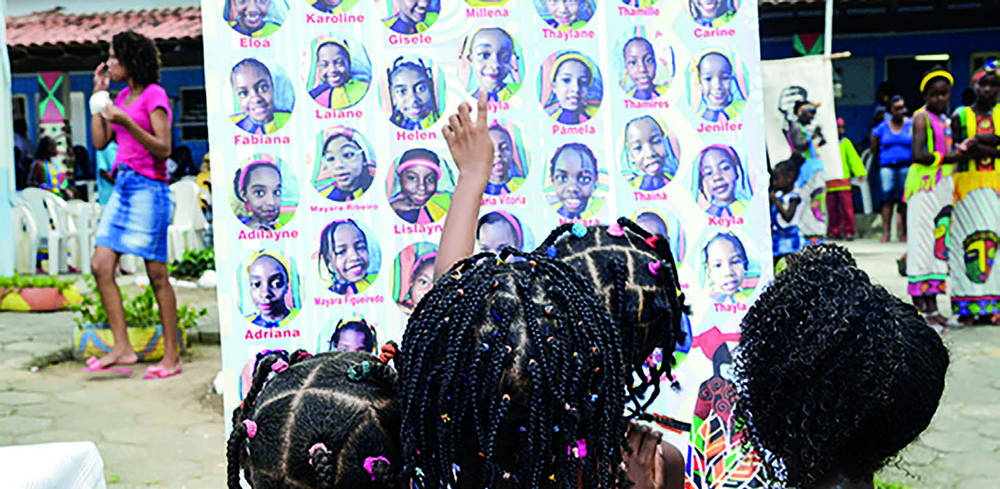

CAPÍTULO 5
INFLUÊNCIAS AFRICANAS NA CULTURA BRASILEIRA
Cesar Diniz/Pulsar Imagens

MENINAS QUILOMBOLAS OBSERVAM CARTAZ COM CANDIDATAS À PRINCESA AFRICANA.
ESCOLA MUNICIPAL PASTOR ALCEBÍADES FERREIRA DE MENDONÇA, QUILOMBO DE SOBARA, RIO DE JANEIRO, 2015.
COMO AS CULTURAS AFRICANAS ESTÃO PRESENTES EM NOSSA IDENTIDADE?
REFLETIR SOBRE A INFLUÊNCIA AFRICANA NA CULTURA E NO DIA A DIA DO POVO BRASILEIRO NOS DÁ A OPORTUNIDADE DE COMPREENDER A IMPORTÂNCIA DE CONHECER E RESPEITAR AS TRADIÇÕES CULTURAIS EM NOSSA SOCIEDADE.
CONSIDERADO UM PAÍS DIVERSIFICADO E PLURAL, O BRASIL TEM UMA POPULAÇÃO QUE SE CARACTERIZA PELA MISTURA DE MUITOS POVOS.
COM BASE EM SUAS EXPERIÊNCIAS, SEUS CONHECIMENTOS FORMAIS E INFORMAIS, VOCÊ E OS COLEGAS VÃO LER, INTERPRETAR E PRODUZIR PEQUENOS TEXTOS A FIM DE AMPLIAR SABERES SOBRE ESSA TEMÁTICA.
Conecte o parágrafo introdutório ao conteúdo, destacando como a fotografia e a reflexão sobre representatividade e valorização da cultura africana estão relacionadas às temáticas racismo, questões de gênero e direitos humanos.
Essa atividade propõe explorar a interdisciplinaridade, promovendo a importância da cultura africana.
Consulte o texto Tranças: além da estética uma forma de sobrevivência (disponível em: https://wp.ufpel.edu.br/empauta/trancas-alem-da-estetica-uma-forma-de-sobrevivencia/, acesso em: 5 maio 2024).
Mostre aos estudantes a diversidade de tranças e seus significados.